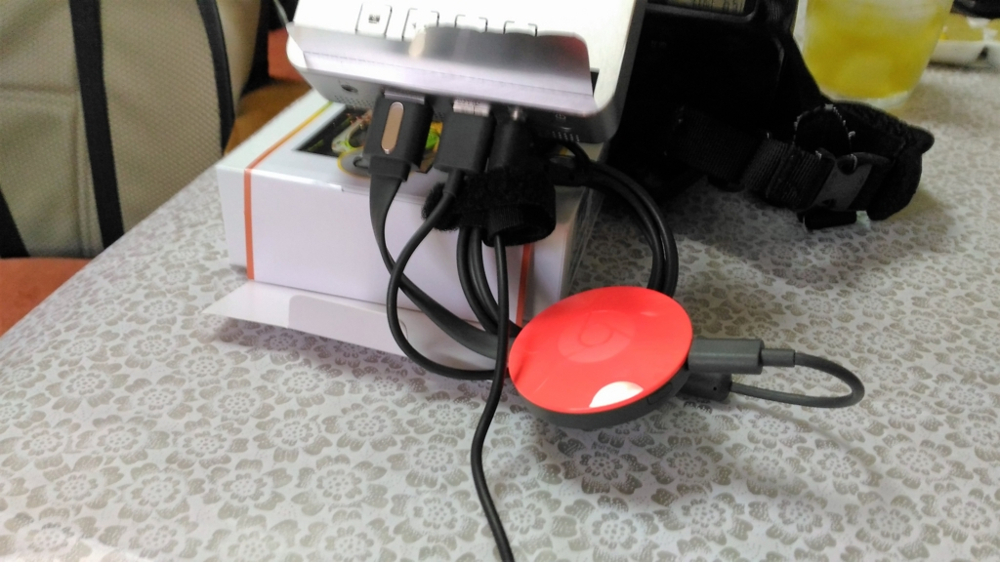
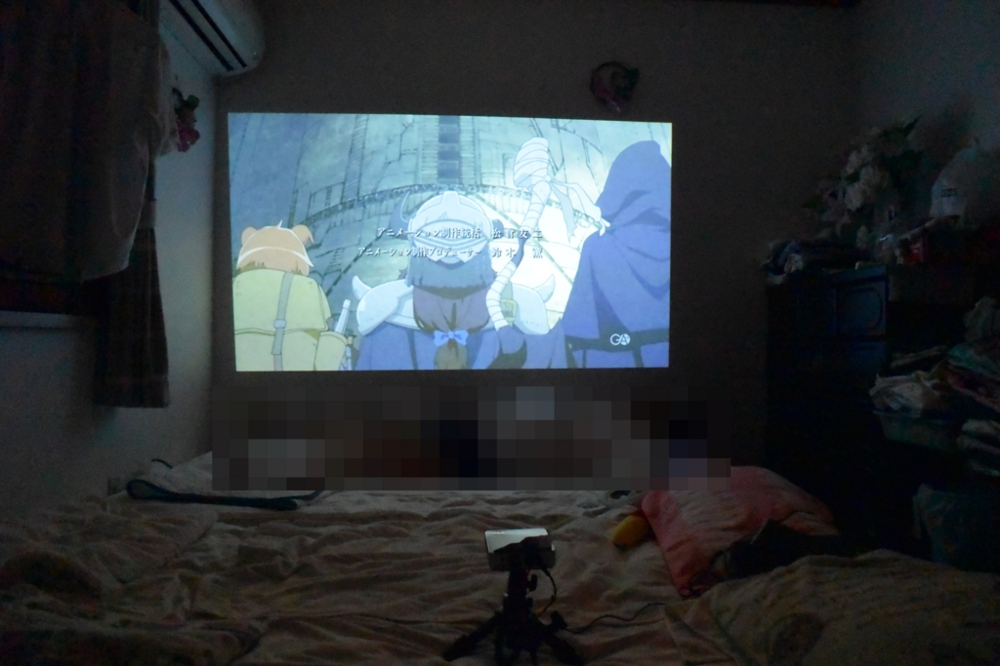

モバイルプロジェクター ＋ Chromecast の組み合わせがなかなかよかった
公開日：
奈良で奈良ならではのことをしてきたあとは、N 氏の部屋でアニメ鑑賞会をやった。なんせ暑かったので、外に出たくない。まだ二時ぐらいだったけど、涼しい部屋でゴロゴロすることにしたのだ。
このために日本橋で最終兵器を買っておいたしな。
「モバイルプロジェクタ～（ドラえもんの声で」
モバイルプロジェクターってのは、読んで字のごとく、手のひらサイズのプロジェクターやな。ビジネス向けの少し大きめのプロジェクターの方が安くて明るいんだけど、持ち運びが面倒。数人でちょろっと集まれる勉強会で使えるかもしれない。
")
ASUS 小型ミニ プロジェクターS1 ( 軽量342g / 高さ3cm / 200ルーメン / HDMI MHL対応 / 6,000mAhバッテリー内蔵 / 投影距離約0.73m / DLP方式 )
- 出版社/メーカー: Asustek
- 発売日: 2014/09/24
- メディア: Personal Computers
- この商品を含むブログ (1件) を見る
モバイルプロジェクターは LED を利用したタイプが多いようで、明るさは 100 ルーメンのものが主流。今回チョイスした ASUS のモノは 200 ルーメンの明るさで、お値段も手ごろなのがいい。6,000mAh のモバイルバッテリーとしても使える（飛行機への持ち込みは気を付けた方がいいかも？）。

入力は HDMI 端子だが、その隣に USB 端子が一つあるの給電にちょうどいい。今回はこれに Chromecast を挿してみたが、お手軽に“無線プロジェクター”が完成した。
最近の iPhone や Android のビデオアプリの多くは Chromecast 対応だろうから、接続は簡単にできると思う。Hulu とか Amazon ビデオのコンテンツがそのまま写せていい感じ。
ちょっと前のバージョンからデスクトップの「Google Chrome」にもキャスト機能が統合されているので、こちらとの相性もいいと思う。

（壁んところで寝転んでる人物にはちゃんとモザイクをかけておいたよ♡）
明るさにはまったく期待してなかったが、意外にイケる。部屋を暗くしなくても、そこそこ見れるのではないだろうか。もちろん、ゆっくり映画を楽しみたいというのならば、部屋を暗くした方がいいけど。天井に写すと、仰向けのまま観れるのもいいな。